![Figure 1: Overview of our approach. (a) Neural External Torque estimation (NEXT) produces high quality joint torque estimates using only 10 minutes of data without dedicated force sensors or explicit system-identification, enabling force-feedback teleoperation on low-cost arms, such as the Piper, YAM, and Nero. (b) Force-Informed Re-Sampling Training (FIRST) uses learned external torque estimates to segment demonstrations into free-space, pre-contact, and contact phases, then up-samples contact-relevant segments during training to improve policy performance.](fig1.png)
Condensed HTML version (text ~50% shorter; full version) made by Claude (claude-opus-5-5) from the PDF; check the PDF for exact wording and figures.
Steven Oh∗1,2, Jason Jingzhou Liu∗†1, Tony Tao∗1, Philip Han1, Kenneth Shaw1, Satoshi Funabashi2, Ruslan Salakhutdinov1, Deepak Pathak1
1Carnegie Mellon University 2Waseda University ∗Equal contribution
Abstract: Contact-rich manipulation requires force sensitivity, but many robot arms lack costly force sensors. We present Neural External Torque Estimation (NEXT), which estimates external joint torques without dedicated sensors. NEXT trains in 1 minute on 10 minutes of free-motion data and matches dedicated joint-torque sensors. It enables force-feedback teleoperation on low-cost arms and improves policy learning via Force-Informed Re-Sampling Training (FIRST), which up-samples pre-contact and contact segments during behavior cloning. Across five long-horizon tasks, FIRST outperforms prior force-aware policies by over 17% in task progress. Video results and code are available at https://jasonjzliu.com/factr2
Tasks like insertion, fastening, and deformable-object handling need force-aware control, which vision alone cannot reliably provide. Force-torque (FT) sensors are mostly found on expensive arms (Franka, Flexiv, KUKA); low-cost arms lack them, limiting force feedback during data collection and force-aware policies. Retrofitting is costly: piezoresistive FT sensors are expensive and bulky [1, 2], while cheaper capacitive (CoinFT [3]) or magnetic (ReSkin [4]) sensors cannot withstand large end-effector forces [5].
We present Neural External Torque estimation (NEXT), which learns from 10 minutes of contact-free trajectories (1 minute of training) a network predicting free-space torque. External torque is the residual between measured motor torque, from motor current, and this prediction. No FT sensors are needed for data collection or deployment. NEXT closely matches dedicated joint-torque sensors on high-end arms and outperforms prior estimators.
This enables (1) force-feedback teleoperation on non-sensorized arms (e.g., AgileX Piper, YAM), comparable to sensorized systems [6, 7]; and (2) FIRST, a behavior cloning method that segments demonstrations into free-space, pre-contact, and contact phases and up-samples the latter two.
FIRST is motivated by policy failures concentrating in pre-contact alignment and contact phases rather than free motion. On five long-horizon, contact-rich tasks it consistently improves success, alignment, recovery, and contact performance.
The combined system, FACTR 2, generalizes FACTR [6] to arms without force sensors, evaluated on platforms from the Piper ($2,500) to the Franka ($30,000). Contributions:
†Correspondence to: Jason Jingzhou Liu, liujason@cmu.edu
Sensorless methods model robot dynamics and treat residuals as external contact. Analytical modeling and system identification [8, 9, 10] require heavy engineering and struggle with dead zones [11] and torque ripple [12]. Supervised learning uses paired real [13] or simulated [14] contact data, requiring labeled collection. Autoencoder anomaly detection [15] suits contact detection, not continuous estimation. Inverse-dynamics learning has been shown for single actuators [12] and the da Vinci system [16], but not broadly on low-cost robots.
Some methods use force as policy input: TA-VLA [17] (joint effort), BiACT [8] (joint torque), CompACT [18] (end-effector force), and ForceVLA [19] (mixture-of-experts). TA-VLA [17] and FoAR [20] add auxiliary contact-aware objectives. Others combine behavior cloning with hybrid force-position or impedance control [21, 22, 23]. FACTR [6] uses force during training to improve generalization. FIRST instead uses external torque to infer contact phases and reshape the training distribution; our ablations show pre-contact samples are often more valuable than in-contact ones.
In RL, AWR [24], CRR [25], and AWAC [26] weight actions by advantage or critics. In imitation learning, Re-Mix adapts DoReMi-style [27] Group DRO [28], DataMIL uses data model estimators [29] for selection [30], DemInf scores mutual information [31], and SCIZOR prunes transitions via progress prediction and clustering [32]. GVL [33] and SARM [34] filter with learned value functions. Demo-SCORE [35] and CUPID [36] use rollouts to filter or estimate demonstration influence.
External joint torque \(\tau_{\text{ext}}\) is joint-space torque induced by environmental interaction, excluding free-space motion torque. It is directly available only on arms with dedicated sensing.
Otherwise, it can be estimated from motor current via \(\tau_m = K I_m\), where \(I_m\) is measured current and \(K\) the torque constant. Given measured motor torque \(\tau_m\) and a dynamics model,
\[\tau_{\text{ext}} = \tau_m - \tau_f, \qquad \tau_f = M(q)\ddot{q} + C(q,\dot{q})\dot{q} + g(q) + \tau_{\text{other}} \tag{1}\]where \(\tau_f\) is the free-space torque for the observed motion. Computing \(\tau_f\) requires the mass matrix \(M\), Coriolis and centrifugal terms \(C\), gravity \(g\), and other terms \(\tau_{\text{other}}\).
This is highly sensitive to errors in \(\tau_f\); identifying inertial, gravitational, and friction parameters from motor-side measurements is difficult [37, 38]. The residual \(\tau_m - \tau_f\) also absorbs unmodeled effects such as nonlinear friction, stiction, backlash, hysteresis, temperature dependence, noise, torque ripple, deadzones, and saturation [39, 40, 41], many history-dependent and only partially observable.
NEXT estimates external joint torque \(\tau_{\text{ext}}\) without force sensors during collection or deployment. Instead of model-based \(\tau_f\), we learn free-space inverse dynamics from joint states:
\[\hat{\tau}_f = f_\theta(x), \qquad \hat{\tau}_{\text{ext}} = \tau_m - \hat{\tau}_f. \tag{2}\]where \(f_\theta\) is a network parameterized by \(\theta\) and \(x\) a proprioceptive history. At deployment, \(\hat{\tau}_{\text{ext}}\) is obtained by subtracting \(\hat{\tau}_f\) from \(\tau_m = K I_m\) (Figure 2). NEXT outperforms prior methods (Section 7, Appendix A.2).
We collect contact-free trajectories \(\mathcal{D}_{\text{free}} = \{(x_i, \tau_{m,i})\}_{i=1}^N\), where \(\tau_{m,i}\) is measured motor torque at timestep \(i\). The input \(x_i\) is
\[x_i = \left[q_{i-H:i},\ \dot{q}_{i-H:i},\ \Delta q_{d,i-H:i}\right], \tag{3}\]where \(H\) is history length, \(q\) joint position, \(\dot{q}\) joint velocity, and \(\Delta q_{d,i}\) the difference between commanded target \(q_{d,i}\) and current position \(q_i\).
Since \(\mathcal{D}_{\text{free}}\) is contact-free, measured torque equals free-space torque, so \(\tau_{m,i}\) supervises \(\tau_f\). About 10 minutes of free motion via teleoperation, motion planning, or replay suffices, with no FT sensing, payload calibration, or system identification.
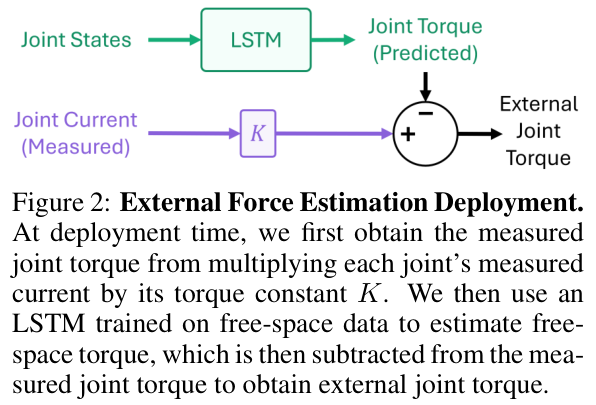
We instantiate \(f_\theta\) as an LSTM mapping \(x_i\) to \(\hat{\tau}_{f,i}\); history captures hysteresis, actuator dynamics, frictional memory, and controller-dependent tracking. Training uses an L2 loss,
\[\mathcal{L}(\theta) = \frac{1}{N}\sum_{i=1}^N \left\| f_\theta(x_i) - \tau_{m,i} \right\|_2^2 \tag{4}\]yielding \(\hat{\tau}_f\) and external torque as residual \(\tau_m - \hat{\tau}_f\). Training takes 1 minute on an RTX 3090; details in Appendix A.
FIRST addresses failures concentrating near contact—pre-contact alignment and controlled contact interaction—by re-weighting the data mixture to sample these segments more often. In Section 7, FIRST improves task success by over 17% and lowers validation loss on these phases.
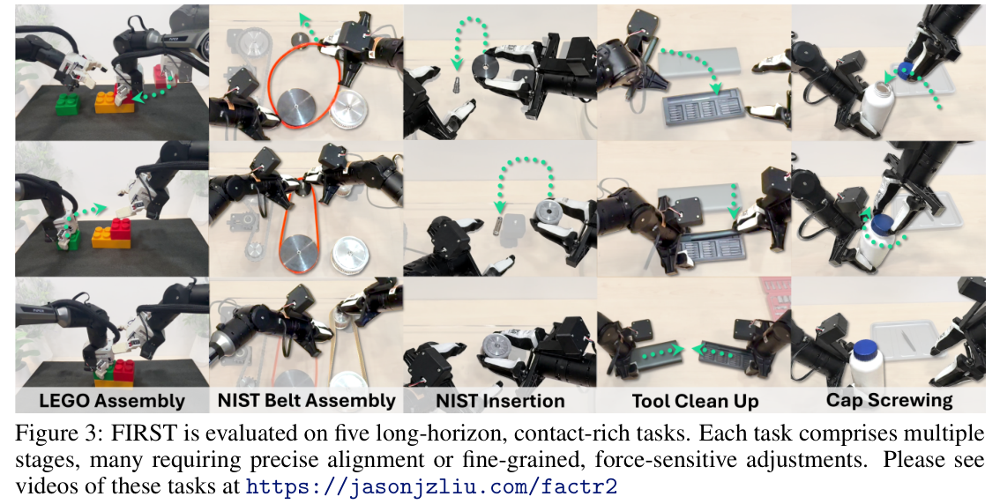
Problem Statement. At timestep \(t\), the policy conditions on \(o_t = (I_t^{1:M}, q_t, \hat{\tau}_{\text{ext},t})\): \(M\) camera images, joint position \(q_t\), and estimated external torque \(\hat{\tau}_{\text{ext},t}\). It predicts future joint targets \(\hat{a}_{t:t+k} \sim \pi_\theta(\cdot \mid o_t)\), where \(a_{t:t+k}\) is an action chunk.
We train by behavior cloning on demonstrations \(\mathcal{D} = \{(o_t, a_{t:t+k})\}\), instantiating \(\pi_\theta\) as a flow-matching policy with velocity field \(v_\theta\). Let \(x_1 = a_{t:t+k}\) be an expert chunk, \(x_0 \sim \mathcal{N}(0, I)\) noise, and \(x_\alpha = (1-\alpha)x_0 + \alpha x_1\) for \(\alpha \sim \mathcal{U}(0,1)\). Using a velocity objective [42], \(v_\theta\) predicts flow from \(x_0\) to \(x_1\):
\[\mathcal{L}_{\text{FM}}(\theta) = \mathbb{E}\left[\left\| v_\theta(x_\alpha, \alpha, o_t) - (x_1 - x_0)\right\|_2^2\right]. \tag{5}\]Segmenting Trajectories into Contact Phases. Each datapoint is labeled contact (physical interaction), pre-contact (one second before contact onset), or free motion.
Contact is detected from \(\hat{\tau}_{\text{ext},t}\) using score \(f_t = \|\hat{\tau}_{\text{ext},t}\|_1\) with hysteresis thresholding: indicator \(c_t\) turns on when \(f_t \ge T_{\text{high}}\), off when \(f_t \le T_{\text{low}}\), otherwise holds. Onsets are where \(c_t\) switches to contact,
\[\mathcal{T}_{\text{onset}} = \{t \mid c_{t-1} = 0,\ c_t = 1\} \tag{6}\]Given control frequency \(F\), label \(s_t\) marks contact timesteps as Contact, the \(F\) timesteps before onset as Pre-Contact, and others as Free Space:
\[s_t = \begin{cases} \text{Contact (C)}, & c_t = 1,\\ \text{Pre-Contact (PC)}, & \exists\, t_{\text{onset}} \in \mathcal{T}_{\text{onset}} : t_{\text{onset}} - F \le t < t_{\text{onset}},\\ \text{Free Space (F)}, & \text{otherwise.}\end{cases} \tag{7}\]Up-Sampling Pre-Contact and Contact Phases in Training. With labels \(s_t \in \{\text{Free Space}, \text{Pre-Contact}, \text{Contact}\}\), FIRST changes only batch sampling, assigning weights \(w_F\), \(w_{PC}\), and \(w_C\) to free-space, pre-contact, and contact, with \(w_{PC}, w_C > w_F\). Datapoints are sampled with probability \(p_t = w(s_t)/\sum_{j=1}^N w(s_j)\), where \(w(s_t)\) is the weight of datapoint \(t\)'s phase, increasing the share of alignment- and force-critical examples per minibatch.
We evaluate on a Franka, whose joint torque sensors and factory-calibrated external torque estimate serve as contact ground truth. For contact, we collect 5 minutes of held-out data with a human applying forces and report joint-averaged L1 error for NEXT, FILIC [22], and a disturbance observer (DO) [43]. For free space, 5 held-out minutes use zero torque as ground truth, with the Franka sensor as an extra baseline (details in Appendix A.4). We repeat free-space evaluation on the sensorless AgileX Piper, assessing contact via a teleoperation user study.
Force-Feedback Teleoperation User Study. 20 participants perform a wiping task on the Franka (Figure 4) under 5 conditions: no feedback, DO feedback, position-position feedback [44] (PP), FACTR Teleop with Franka's torque sensors, and FACTR Teleop with NEXT. Both FACTR variants use the control law [6]:
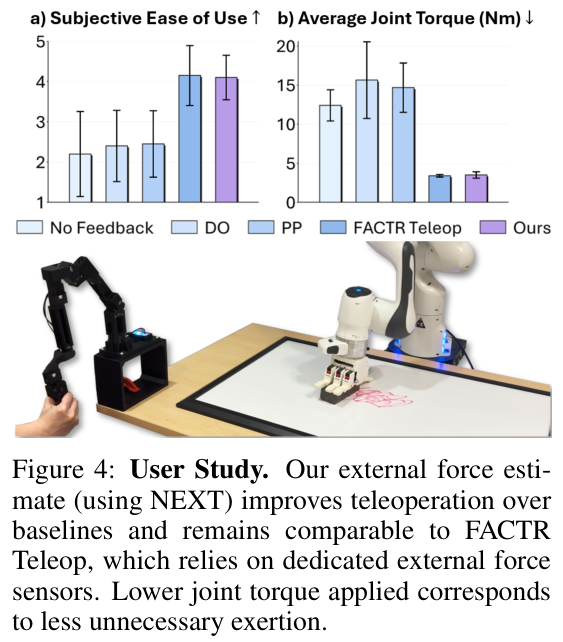
where \(\tau_{\text{feedback}}\) is leader-arm torque and \(K_{f,p}\) scales follower external torque \(\tau_{\text{ext}}\); \(\tau_{\text{ext}}\) comes from Franka's factory estimate or NEXT. We collect 1–5 ease-of-use ratings and applied torque, and repeat on the Piper (Appendix A.5).
Experiment Settings. We evaluate on five long-horizon, contact-rich tasks (Figure 3; Appendix C.1), collecting 250 demonstrations each on a bimanual Piper with two wrist and two overhead RGB cameras. Each policy gets 20 rollouts per task; we report task progress (Appendix C.2).
Policy Details and Baselines. All methods share a flow-matching policy adapted from Multi-modal Diffusion Transformer [45], trained 20 epochs with chunk size 30; we repeat with ACT [46]. Action heads are trained from scratch (Appendix B). Variants:
| Motion Type | External Torque Method | L1 Error (Nm) |
|---|---|---|
| Contact | External Sensor (GT) | 0.000 ± 0.000 |
| FILIC [22] | 4.395 ± 1.531 | |
| Disturbance Observer [43] | 1.471 ± 0.761 | |
| NEXT (Ours) | 0.547 ± 0.348 | |
| Free Space | Free Space (GT) | 0.000 ± 0.000 |
| FILIC [22] | 2.460 ± 1.358 | |
| Disturbance Observer [43] | 2.429 ± 1.298 | |
| External Sensor | 0.449 ± 0.208 | |
| NEXT (Ours) | 0.414 ± 0.278 |
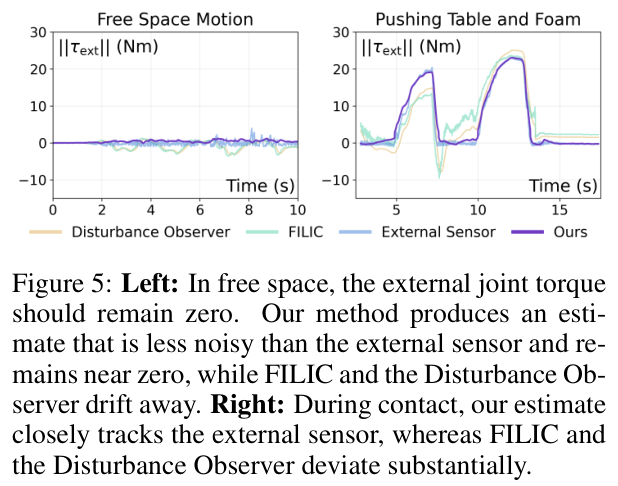
For force estimation we ask: (i) how NEXT compares to sensors and baselines; (ii) how effective it is for force-feedback teleoperation.
For imitation learning: (i) how FIRST compares to force-aware baselines; (ii) which phases to up-sample.
NEXT predicts external joint torque comparable to dedicated sensors. Under contact on the Franka (Table 1), NEXT achieves 0.547 Nm average L1 error, 87.6% lower than FILIC and 62.8% lower than DO. Figure 5 (right) shows NEXT tracking the sensor closely while baselines deviate, especially at contact transitions.
In free space, NEXT achieves the lowest error, even beating the Franka sensor, with a less noisy, near-zero estimate (Figure 5, left), likely because it learns hardware-specific effects from data.
On the Piper, NEXT achieves 0.018 Nm average L1 error, well below baselines (Table 5, Appendix A.6). LSTM outperforms GRU and MLP variants (Appendix A.2).
NEXT enables high-quality force-feedback teleoperation on low-cost arms. On the Franka, participants rated NEXT feedback easier to use than baselines (Figure 4 (a)), and it reduced applied force comparably to sensor-based FACTR Teleop (Figure 4 (b)); lower force indicates greater force awareness. On the Piper, NEXT also outperforms baselines (Appendix A.6).
FIRST leads to improved policy performance. Figure 6 shows FIRST achieves the highest task progress on all five tasks with flow matching (ACT in Appendix D.2), especially on multi-stage tasks like NIST Belt requiring reliable transitions between free motion, alignment, and contact. FIRST produces more robust recovery, such as fine realignment before insertion, wrapping, or screwing.
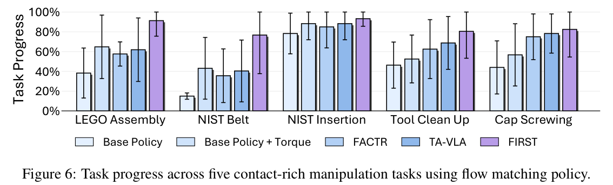
Figure 7 shows phase-wise validation loss on NIST Belt: for Base Policy + Torque, pre-contact and contact losses exceed free-motion loss; FIRST reduces them toward free-motion levels.
FIRST upsampling ablation. Table 2 shows upsampling pre-contact gives the highest average progress, as these moments determine pose and alignment. Upsampling pre-contact and contact is competitive and best on Cap Screwing, where sustained contact matters; upsampling contact alone does not help. Per-task ratios are in Appendix D.4.
| Task | Upsampling Phase | ||
|---|---|---|---|
| C | PC | PC+C | |
| LEGO Assembly | 0.697 | 0.913 | 0.875 |
| NIST Belt | 0.494 | 0.767 | 0.649 |
| NIST Insertion | 0.800 | 0.933 | 0.933 |
| Tool Clean Up | 0.650 | 0.805 | 0.775 |
| Cap Screwing | 0.707 | 0.673 | 0.825 |
| Average | 0.670 | 0.818 | 0.811 |
Why not use raw joint current as input? Table 10 shows raw current helps NIST Insertion but not Cap Screwing, while NEXT torque is best on both, suggesting subtracting learned free-space dynamics gives a cleaner contact representation. See Appendix D.6.
NEXT estimates external joint torque without force sensors from 10 minutes of free-space data and 1 minute of training, matching dedicated sensors and enabling force-feedback teleoperation on low-cost arms. FIRST uses these estimates to up-sample pre-contact and contact segments, improving contact-rich behavior cloning.
First, NEXT's absolute torque scale depends on the torque constant \(K\) from the manufacturer or a current–torque curve; if \(K\) is inaccurate, calibration against an external sensor is needed. This matters less for teleoperation, where forces are scaled for comfort [6], and policy learning, where inputs are normalized. Second, NEXT is robot-specific and may need retraining across arms.
We thank Andrew Wang, Yulong Li, Koki Yamane, Yangcen Liu, Yongliang Wang, Ritvik Singh, Zheyuan Hu, Adam Kan, and Arthur Allshire for discussions and feedback, and Zheyuan Hu and the AIRe Lab for YAM arm access. Supported in part by AFOSR FA9550-23-1-0747, ONR MURI N00014-22-1-2773 and ONR MURI N00014-24-1-2748.
We use a stateless sliding-window LSTM, resetting the hidden state per sequence to provide recent context without long-trajectory drift. Local history captures velocity-, actuator-, and friction-dependent effects without estimating acceleration. At deployment a rolling buffer of the last N observations is used, and external torque is the residual from measured torque. Architecture and hyperparameters are in Table 3.
On one thread of an Intel Core i9-10920X, a forward pass takes about 1.76 ms (568 Hz); we run at 100 Hz.
| Hyperparameter | Value |
|---|---|
| Recurrent backbone | 2-layer LSTM with hidden size 128 |
| Prediction head | 2-layer MLP with hidden size 256 |
| Dropout | 0.1 |
| Loss function | Mean squared error (MSE) |
| Optimizer | AdamW |
| Base learning rate | \(1 \times 10^{-3}\) |
| Weight decay | \(1 \times 10^{-6}\) |
| Gradient clipping | 1.0 |
| Early stopping | Enabled; validation loss, patience 20, warmup 10, min \(\Delta = 10^{-5}\) |
| Hardware | NVIDIA RTX 3090, 24 GB |
| Training time | Approximately 1 minute with early stopping |
| Data frequency | 100Hz |
We ablate architecture, input, and history length using free-space and contact estimation error, comparing MLPs (used on da Vinci [16]), GRUs (used for single actuators [12]), and LSTMs.
Table 4 reports average joint L1 validation error. MLPs underperform recurrent models, showing the value of history. GRUs do well in free space but worse in contact; LSTMs are best in both, likely capturing longer-term actuator, friction, and controller effects.
We compare inputs \(q\), \((q, \dot{q})\), and \((q, \dot{q}, \Delta q_d)\) with histories of 10, 25, and 50. \((q, \dot{q}, \Delta q_d)\) is consistently best, as tracking error reflects controller effort. Longer histories help, especially for LSTMs. We use an LSTM with \(H = 50\) and input \((q, \dot{q}, \Delta q_d)\).
| Input | H | MLP | GRU | LSTM (Ours) | |||
|---|---|---|---|---|---|---|---|
| Free Motion ↓ | Contact ↓ | Free Motion ↓ | Contact ↓ | Free Motion ↓ | Contact ↓ | ||
| \(q\) | 10 | 2.35±2.34 | 1.78±1.64 | 2.25±1.79 | 1.12±1.09 | 2.53±2.52 | 2.61±2.29 |
| 25 | 2.02±2.01 | 1.34±1.32 | 1.68±1.30 | 0.665±0.478 | 2.21±2.20 | 1.45±1.39 | |
| 50 | 1.76±1.76 | 1.13±1.06 | 1.62±1.24 | 0.843±0.835 | 2.15±2.15 | 1.09±0.908 | |
| \(q, \dot{q}\) | 10 | 1.04±1.03 | 0.681±0.647 | 0.863±0.862 | 0.580±0.535 | 1.15±1.15 | 0.715±0.553 |
| 25 | 0.980±0.976 | 0.908±0.802 | 0.814±0.814 | 0.596±0.506 | 1.11±1.11 | 0.551±0.511 | |
| 50 | 1.02±1.02 | 0.905±0.892 | 0.795±0.794 | 0.653±0.549 | 1.12±1.12 | 0.578±0.526 | |
| \(q, \dot{q}, \Delta q_d\) | 10 | 0.706±0.702 | 1.89±1.71 | 0.423±0.422 | 1.94±1.75 | 0.504±0.503 | 0.876±0.244 |
| 25 | 0.755±0.747 | 1.56±1.45 | 0.473±0.472 | 1.47±1.29 | 0.490±0.489 | 0.789±0.453 | |
| 50 | 0.813±0.811 | 1.47±1.33 | 0.429±0.429 | 1.62±1.45 | 0.414±0.278 | 0.547±0.348 | |
Figure 8 shows the 10-minute Piper free-motion dataset distribution. We move each joint across its range, then perform multi-joint Cartesian-like motions, repeating at slow and fast speeds. Trajectories can come from motion planning or be recorded once and replayed on new setups.
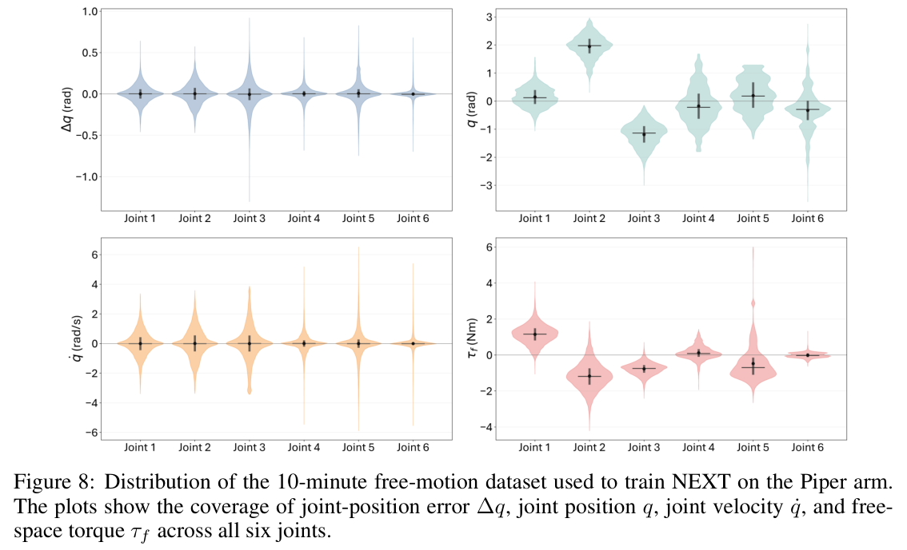
We implement FILIC [22] and a disturbance observer [43] on Franka and Piper, using the system-identified Franka model from [47] and the Piper URDF model [48].
FILIC [22]. Given measured torque \(\tau_m\), external torque subtracts MuJoCo inverse-dynamics free-space torque:
\[\hat{\tau}^{\text{FILIC}}_{\text{ext}} = \tau_m - \tau_f, \qquad \tau_f = M(q)\ddot{q} + C(q,\dot{q})\dot{q} + g(q) \tag{9}\]attributing the full residual to external interaction.
Disturbance Observer [43]. A momentum-based observer estimates external torque from the generalized momentum residual,
\[p = M(q)\dot{q}. \tag{10}\]with internal estimate \(\hat{p}\) evolving as
\[\dot{\hat{p}} = \tau_m - C(q,\dot{q})\dot{q} - g(q) + \dot{M}(q)\dot{q} + \hat{\tau}^{\text{MDO}}_{\text{ext}}, \qquad \hat{\tau}^{\text{MDO}}_{\text{ext}} = K_o(p - \hat{p}). \tag{11}\]Avoiding \(\ddot{q}\) makes it smoother than FILIC, but still less accurate than NEXT (Figure 5).
Five feedback conditions on the Franka Panda:
On the Piper we repeat the study without FACTR Teleop, as it lacks torque sensing.
On the Piper we evaluate only free space (zero ground truth). NEXT achieves the lowest error, 0.018 Nm average L1, beating FILIC and DO (Table 5).
For contact, the user study (Figure 9) shows participants found NEXT feedback easier to use than baselines.
| External Torque Method | Error (Nm) ↓ |
|---|---|
| Free Motion (GT) | 0.000 ± 0.000 |
| FILIC | 0.435 ± 0.225 |
| Disturbance Observer | 0.248 ± 0.132 |
| Ours | 0.018 ± 0.012 |
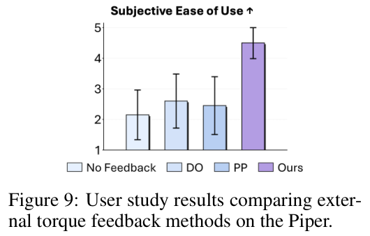
RGB images, proprioception, and force estimates are tokenized for an ACT or Flow Matching DiT policy. Images use a DINOv3-Base encoder [50]; proprioception and force use MLP projections.
Proprioception includes joint positions and gripper widths; force is estimated external joint torque; only the current observation is used. Actions are absolute joint angles and gripper width with horizon 30. Action heads are trained from scratch. Training details are in Table 6.
| Hyperparameter | Value |
|---|---|
| Behavior Policy Training | |
| Optimizer | AdamW |
| Base Learning Rate | \(3 \times 10^{-4}\) |
| Weight Decay | 0.05 |
| Optimizer Momentum | \(\beta_1, \beta_2 = 0.9, 0.95\) |
| Batch Size | 128 |
| Learning Rate Schedule | Cosine Decay |
| Total Epochs | 15–20 |
| Warmup Steps | 500 |
| Augmentation | RandomResizeCrop |
| GPU | A6000 (48 GB) |
| Wall-Clock Time | 12–24 hours |
| Action Chunking Transformer Details | |
| # Encoder Layers | 4 |
| # Decoder Layers | 6 |
| # MHSA Heads | 8 |
| Hidden Dim | 768 |
| Feed-Forward Dim | 3072 |
| Dropout | 0.1 |
| Positional Encoding | Sinusoidal |
| Action Chunk | 30 |
| Flow Matching Details | |
| # Decoder Layers | 6 |
| # MHSA Heads | 8 |
| Hidden Dim | 768 |
| Feed-Forward Dim | 3072 |
| Dropout | 0.1 |
| Positional Encoding | Sinusoidal |
| Action Chunk | 30 |
| Eval Steps | 10 |
| Time Sampling | \(\tau \sim \text{Beta}(1.0, 1.5)\) |
| ODE Solver | Euler |
| Noise Distribution | \(\mathcal{N}(0, I)\) |
Five long-horizon, contact-rich tasks:
Each task is split into stages marked completed (s) or failed (f) per rollout; progress rate is the percentage of completed stages across rollouts.
Stages are in Table 7: LEGO covers grasping, aligning, and inserting red and green cubes; NIST Belt covers picking, aligning, and pushing both belts; NIST Insertion covers picking, aligning, and inserting the black part, then picking the aluminum part; Case Assembly covers picking, aligning, inserting the driver, then assembling the box.
For cap screwing, each over-turn after tightening subtracts 0.02, penalizing policies that fail to stop.
| Task | Stages |
|---|---|
| LEGO | red grasp, red align, red insert, green grasp, green align, green insert |
| NIST Belt | pick orange, align big, align small, push, pick grey, align grey, push |
| NIST Insertion | pick black, align black, insert black, pick aluminum |
| Tool Clean Up | pick driver, align driver, insert driver, assemble box |
| Cap Screwing | pick cap, align cap, screw on, end properly |
Base Policy: ACT or flow-matching policy (Sec. 6.2) on multi-view RGB and proprioception, predicting joint and gripper command chunks.
Base Policy + Torque: Adds NEXT torque, MLP-embedded as an extra observation token.
FACTR [6]: Unchanged architecture with a linear Gaussian-blur curriculum on images; at step \(n\), blur strength is
\[\sigma_n = \sigma_0\left(1 - \frac{n}{N}\right),\]where \(\sigma_0\) is initial strength and \(N\) total curriculum steps, so blur fades during training.
TA-VLA[17]: Predicts torque/contact as an auxiliary target; only action dimensions are executed at inference.
Figure 10 shows hysteresis-based phase labels: NEXT torque stays near zero in free motion and rises during interaction, separating free-motion, pre-contact (alignment just before onset), and contact phases, enabling automatic segmentation on sensorless arms.
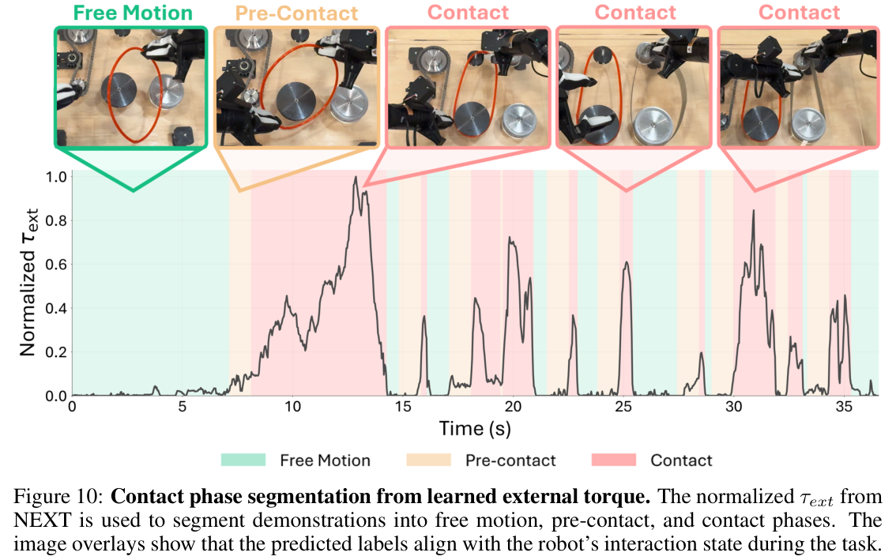
With ACT (Figure 11), up-sampling pre-contact and contact similarly improves task progress over baselines.
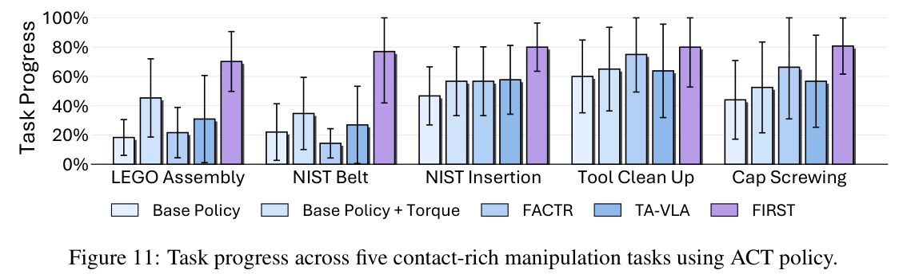
Table 8 lists ratios \(w_F : w_{PC} : w_C\), where \(w_F\), \(w_{PC}\), and \(w_C\) weight free-motion, pre-contact, and contact. Most tasks use 1 : 5 : 1; Cap Screwing uses 1 : 3 : 3, given sustained contact. Ratios are chosen by task progress.
| Task | Best Re-Sampling Ratio |
|---|---|
| LEGO Assembly | 1 : 5 : 1 |
| NIST Belt Assembly | 1 : 5 : 1 |
| NIST Insertion | 1 : 5 : 1 |
| Tool Clean Up | 1 : 5 : 1 |
| Cap Screwing | 1 : 3 : 3 |
Figure 12 ablates magnitude \(m\), the up-sampled phase weight relative to free motion. For pre-contact up-sampling the weights are
\[w_F : w_{PC} : w_C = 1 : m : 1,\]and for pre-contact + contact up-sampling
\[w_F : w_{PC} : w_C = 1 : m : m.\]We use ACT on NIST Belt Assembly, NIST Insertion, and Tool Clean Up, plus flow matching on Tool Clean Up only due to compute. Moderate up-sampling helps, peaking around \(m = 5\); larger values saturate or degrade, over-biasing toward contact segments and reducing trajectory coverage.
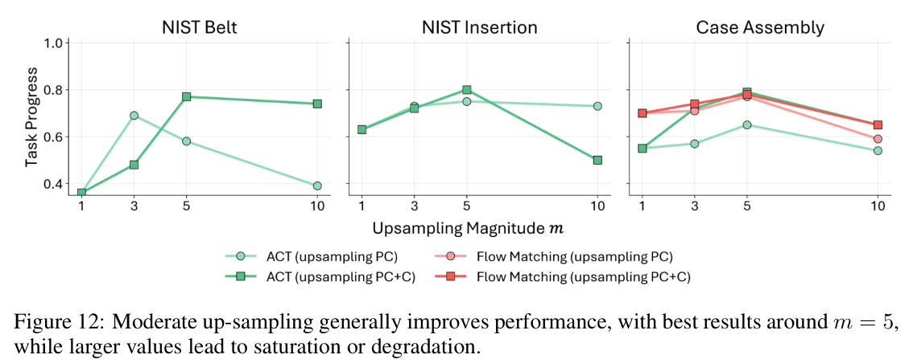
FIRST can also be used without force input: NEXT only segments demonstrations offline for re-sampling, while the policy sees only visual and proprioceptive inputs.
Table 9 shows, first, that without torque input, PC or PC+C up-sampling generally improves over standard behavior cloning for both ACT and Flow Matching, so NEXT-derived labels help even when used only at training time.
Second, force-conditioned policies consistently outperform their counterparts without torque, and the best results combine NEXT torque input with FIRST up-sampling.
| Policy | Up-sampling Strategy | w/o \(\tau_{\text{ext}}\) | w/ \(\tau_{\text{ext}}\) | ||
|---|---|---|---|---|---|
| Belt Assembly | Tool Clean Up | Belt Assembly | Tool Clean Up | ||
| ACT | None | 0.220 | 0.600 | 0.347 | 0.650 |
| PC | 0.360 | 0.600 | 0.687 | 0.650 | |
| PC + C | 0.283 | 0.763 | 0.770 | 0.788 | |
| Flow Matching | None | 0.150 | 0.463 | 0.431 | 0.525 |
| PC | 0.213 | 0.575 | 0.767 | 0.805 | |
| PC + C | 0.241 | 0.525 | 0.649 | 0.775 | |
Prior work such as TA-VLA [17] uses raw joint current, but current mixes free-space actuation, contact, and hardware- and controller-dependent effects, forcing the policy to disentangle them.
| Method | NIST Insertion ↑ | Cap Screwing ↑ |
|---|---|---|
| ACT | 0.220 | 0.440 |
| ACT w/ current | 0.431 | 0.440 |
| ACT w/ \(\tau_{\text{ext}}\) | 0.567 | 0.525 |
NEXT subtracts learned free-space torque, which requires temporal context: Appendix A.2 shows longer histories improve estimation, so instantaneous observations are insufficient. Policies typically see only the current observation; giving them a 50-step history would burden them with dynamics inference and risk overfitting to motion patterns rather than reacting visually. NEXT handles history in a dedicated module and gives the policy a compact contact signal.
On NIST Insertion (detecting alignment and contact) and Cap Screwing (detecting tightness), Table 10 shows current helps NIST Insertion over base ACT but not Cap Screwing, while NEXT torque is best on both. Current-conditioned policies often over-screw, while torque-conditioned ones detect tightening and stop.
Figure 13 plots average first-decoder-layer cross-attention from action tokens to force-related tokens (current or external-torque tokens), measuring how strongly the policy attends to force input.
During screwing, the torque-conditioned policy's attention rises clearly at key contact events, especially tightening, while the current-conditioned policy shows weaker, less event-aligned attention. Though not causal proof, this suggests learned torque is a cleaner, more task-relevant representation.
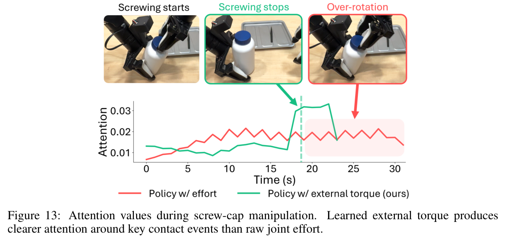
We compare FIRST to weighted regression, which reweights the loss by phase instead of changing batch composition.
Table 11 shows weighted regression degrades or barely improves over no up-sampling, while weighted sampling consistently improves LEGO assembly, with similar trends elsewhere. Upweighting sparse samples' loss may destabilize optimization or overfit to those segments, whereas per-batch up-sampling keeps the original objective while exposing the policy more often to critical transitions.
| Phase Emphasis Mechanism | Emphasized Phase | Task Progress |
|---|---|---|
| None | – | 0.453 |
| Weighted Regression | PC | 0.345 |
| PC + C | 0.478 | |
| FIRST (Ours) | PC | 0.573 |
| PC + C | 0.501 |